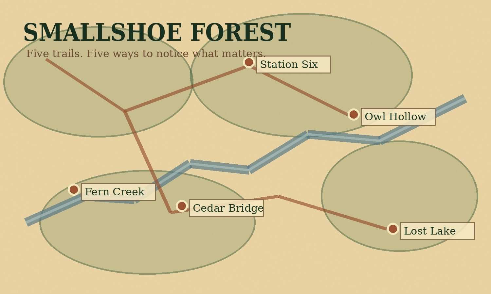

Morning ritual
Choose today’s first trail.
One scenario from each recognition behavior will appear during the expedition. The selected location sets the day’s opening scene.
Fern Creek Trail
Selected starting point
